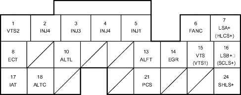

Fuel and Emissions Systems
|
11-177 |
ECM/PCM Inputs and Outputs at Connector B (24P)

Wire side of female terminals
NOTE: Standard battery voltage is 12 V.
Terminal number |
Wire colour |
Terminal name |
Description |
Signal |
1*7 |
RED |
VTS 2 (VTEC SOLENOID VALVE 2) |
Drives VTEC solenoid valve 2 |
At idle: about 0 V |
2 |
YEL |
INJ4 (No. 4 INJECTOR) |
Drives No. 4 injector |
With ignition switch ON (II): battery voltage At idle: duty controlled |
3 |
BLU |
INJ3 (No. 3 INJECTOR) |
Drives No. 3 injector |
|
4 |
RED |
INJ2 (No. 2 INJECTOR) |
Drives No. 2 injector |
|
5 |
BRN |
INJ1 (No. 1 INJECTOR) |
Drives No. 1 injector |
|
6 |
GRN |
FANC (RADIATOR FAN CONTROL) |
Drives radiator fan relay |
With radiator fan running: about 0 V With radiator fan stopped: battery voltage |
7*18 |
RED/BLK |
LSA + (A/T PRESSURE CONTROL SOLENOID VALVE A + SIDE |
Drives A/T pressure control solenoid valve A |
With the ignition switch ON (II): duty controlled |
7*16 |
GRN/WHT |
HLCLS + (CVT PULLEY PRESSURE CONTROL VALVE + SIDE)) |
Drives CVT pulley pressure control valve |
With ignition switch ON (II): pulsing signal |
8 |
RED/WHT |
ECT (ENGINE COOLANT TEMPERATURE (ECT) SENSOR) |
Detects ECT sensor signal |
With the ignition switch ON (II): about 0.1-4.8 V (depending on engine coolant temperature) |
10 |
WHT/BLU |
ALTL (ALTERNATOR L SIGNAL) |
Detects alternator L signal |
With ignition switch ON (II): about 0 V With engine running: battery voltage |
13 |
WHT/RED |
ALTF (ALTERNATOR FR SIGNAL) |
Detects alternator FR signal |
With engine running: 0 V-5 V (depending on electrical load) |
14*3 |
BLU/RED |
EGR (EXHAUST GAS RECIRCULATION (EGR) VALVE) |
Drives EGR valve |
With EGR operating: duty controlled With EGR not operating: about 0 V |
15*6 |
GRN/YEL |
VTS (VTS 1) (VTEC SOLENOID VALVE (1)) |
Drives VTEC solenoid valve (1) |
At idle: about 0 V |
16*18 |
BLK/RED |
LSB + (A/T PRESSURE CONTROL SOLENOID VALVE B + SIDE |
Drives A/T pressure control solenoid valve B |
With the ignition switch ON (II): duty controlled |
16*16 |
YEL/GRN |
SCLS + (CVT START CLUTCH PRESSURE CONTROL VALVE + SIDE) |
Drives CVT start clutch pressure control valve |
With ignition switch ON (II): pulsing signal |
17 |
RED/YEL |
IAT (INTAKE AIR TEMPERATURE (IAT) SENSOR) |
Detects IAT sensor signal |
With ignition switch ON (II): about 0.1 V-4.8 V (depending on intake air temperature) |
18*5 |
WHT/GRN |
ALTC (ALTERNATOR CONTROL) |
Sends alternator control signal |
With engine running: about 0 - 5 V (depending on electrical load) |
21*14 |
YEL/BLU |
PCS (EVAPORATIVE EMISSION (EVAP) CANISTER PURGE VALVE) |
Drives EVAP canister purge valve |
With engine running, engine coolant below 70°C (158°F): battery voltage With engine running, engine coolant above 70°C (158°F): duty controlled |
24*16 |
BLU/WHT |
SHLS + (CVT SPEED CHANGE CONTROL VALVE + SIDE) |
Drives CVT speed change control valve |
With ignition switch ON (II): duty controlled |
|
*1: with TWC model (except KV model) *2: without TWC model *3: D15Y4, D17A2 (KU, KQ, KZ, FO models) engines *4: with cruise control *5: D15Y4, D17A2 (KU model) engines *6: D15Y4, D16W8, D16W9, D17A2, D17A5, D17Z3, D17Z4 engines *7: D16W8, D16W9 engines *8: except D15Y2, D15Y3, D15Y5, D15Y6 engines *9: D15Y6 engine *10: D15Y4, D17A2 (KU, KQ, KZ, FO models), D17Z1 (KQ model) engines *11:KU model *12 except KU model |
*13: D15Y6, D15Y3 (KY model with immobiliser, KN model), D15Y5, D15Y4, D17Z1 (KQ, KZ models), D17A1 (KK model), D17A2 (except MA model), D17A5 (KY model with immobiliser, KN model) engines *14: except D15Y3 (PA, KW, KT, KN models), D16W9 (PA model), D17A5 (KN model) engines *15: A/T and M/T *16: CVT *17: A/T and CVT *18: A/T *19:except D15Y6, D15Y3 (KY model with immobiliser, KN model), D15Y5, D15Y4, D17Z1 (KQ, KZ models), D17A1 (KK model), D17A2 (except MA model), D17A5 (KY model with immobiliser, KN model) engine |